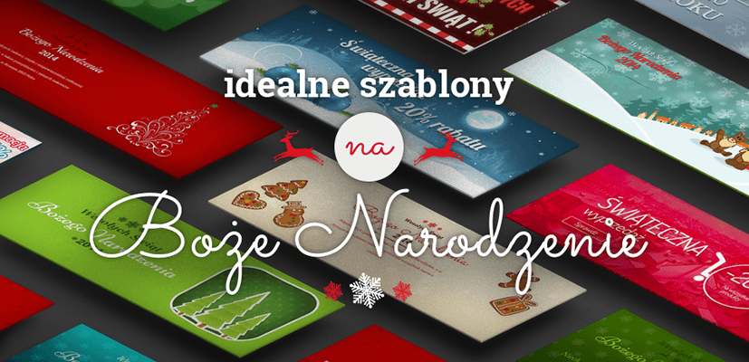

Jedni z potrzeby własnego biznesu, drudzy w wyniku zmiany kanału sprzedaży, jeszcze inni dlatego, że „internet to przyszłość”. Polacy – jak wynika z ankiety przeprowadzonej wśród nowych klientów Shoper – otwierają sklepy internetowe przynajmniej z pięciu powodów. I w dominującej większości są z tej decyzji bardzo zadowoleni. Zobaczcie wyniki.
Shoper Blog eXperience
- Wskazówki i porady
- Rynek e-commerce
- Prawo e-commerce
- Inspiracje
- Co nowego w Shoper?
- Uniwersytet E-commerce
Bloguj, inspiruj, motywuj do zakupów
Dla poszerzenia oferty sklepu, przyciągnięcia nowej grupy klientów, dla ich inspiracji oraz edukacji. Blogować w sklepie internetowym można z wielu powodów. A każdy jest dobry.
Od ładnej grafiki po ludzką twarz sklepu, czyli czym (jeszcze) przyciągnąć klientów
Dla tych, którzy dopiero planują uruchomić swój sklep internetowy, jak i dla właścicieli doświadczonych już w e-handlu: oto szybki przewodnik po pięciu istotnych elementach, na które klienci zwracają uwagę.
Pomysł na sklep: Egometria
Fajny pomysł, przyciągająca uwagę kolekcja i rosnąca z miesiąca na miesiąc liczba fanów – zobaczcie, jak dwie dziewczyny z Katowic zaczęły sprzedawać projektowane przez siebie ciuchy w internecie. Poznajcie Egometrię.
Obniż koszt prowadzenia sklepu do 0 zł!
Możesz prowadzić sklep na Shoper za darmo.
Dokładnie tak :) Wystarczy, że będziesz go polecać innym.
Sprzedawaj co chcesz i komu tylko chcesz
Ubrania, buty, sprzęt sportowy… to tylko jedne z najpopularniejszych kategorii otwieranych sklepów internetowych. W sieci możesz dziś sprzedawać znacznie więcej, jeśli nawet nie wszystko.
Najważniejsza jest prawdziwa pasja
Prawdziwa pasja + najnowsza technologia = się świetnie prosperujący sklep internetowy.
Karolina Bartnik-Kura: Isostar to jedna z najbardziej rozpoznawalnych marek na świecie dla osób aktywnych fizycznie. Jak to się stało, że prowadzi Pan oficjalny sklep internetowy Isostara?
Przemysław Kozok: Oficjalny sklep Isostar prowadzimy już od wielu lat, co pozwoliło nam nie tyko na dogłębne zapoznanie się z branżą, ale i na zdobycie doświadczenia w sprzedaży tego rodzaju produktów. Poznaliśmy także potrzeby osób aktywnie uprawiających sport, zarówno tych robiących to amatorsko, jak i profesjonalnie. To wszystko sprawiło, że postanowiliśmy, jak to się mówi, złapać byka za rogi i sami sprostać ich wymaganiom, zakładając własny sklep.
Twój sklep internetowy w 2015: zaimponuj klientowi, postaw na mobile
Jakieś postanowienia na nowy rok? Może zacznijmy od pięciu rzeczy, które zrobią w 2015 z twojego sklepu zwycięzcę internetu.
Twój sklep internetowy w świątecznej odsłonie
80 procent Polaków posiadających dostęp do sieci planuje w tym roku zrobić zakupy świąteczne w sklepach internetowych – wynika z badań rynkowych przeprowadzonych przez instytut badawczy ARC Rynek i Opinia. Jako właściciel e-sklepu zapewne chciałbyś uszczknąć część tego tortu, dlatego podpowiemy ci, jak to zrobić.
Przygotuj się na Święta! Zadbaj o świąteczny wygląd twojego sklepu

Wykorzystaj gorączkę świątecznych zakupów i przyciągnij do siebie klientów wyjątkowym wyglądem.Już teraz zadbaj o grafikę, która odmieni twój sklep na święta Bożego Narodzenia.
Więcej